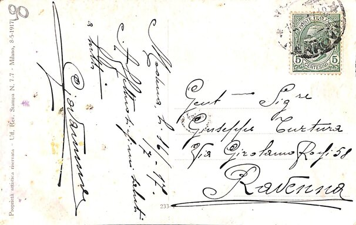
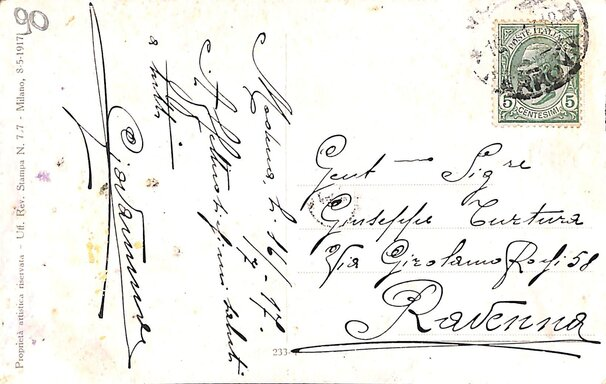

Le cartoline di Giovannino ad Oliva
Saluti affettuosi da Modena
Autore: GiovanniDonna in posa
Donna con velo sul capo, all'altezza della spalla vi è il nome dell'artista (Tito Corbella), inoltre possiamo osservare lo sguardo fisso e magnetico. 
Un saluto da Giovannino
Autore: GiovanniLettera in viaggio
L'immagine raffigura una donna agiata appartenente all'alta borghesia con lo sguardo rivolto verso sinistra in direzione di una monaca dall'aspetto umile, raffigurata con la testa chinata verso il basso e le mani conserte all'altezza della vita. Sul lato destro, all'altezza delle scarpe della donna borghese, possiamo notare la firma dell'artista (Minos) e l'anno 1917.
Progetto realizzato per il corso di Codifica di Testi a.a. 2019/2020